I'm a casual keyboard hobbyist who got into the craft two and a half years ago. Back when I was an intern at Uniswap, I started nerding out over keyboards with my
co-worker and co-intern and that evolved into a company-wide mechanical keyboard building workshop (led by the Team Clickity Clack trio).
This guide is an adapted version of that workshop. If you want to build your first mechanical keyboard, this is a great place to start because it's approachable and
you'll still get a really awesome keyboard out of it.
I. Anatomy of a Keyboard
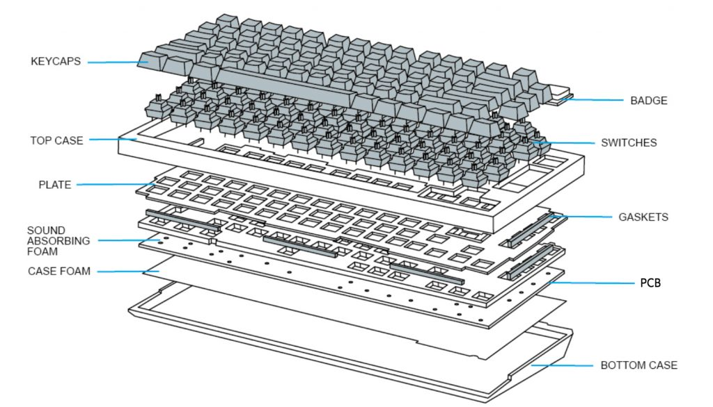
This is the full stack of a mechanical keyboard. For your first keyboard, it's nice to choose
a build pack that includes everything except the switches and the keycaps. This allows you to
go pretty far with customizing how your board looks and feels without too much effort and a reasonable price.
That leaves four main design decisions: (1) size, (2) casing, (3) switches, and (4) keycaps. After that, it's bonus mods!
Size
The different keyboard layouts are 60, 65, and 87.
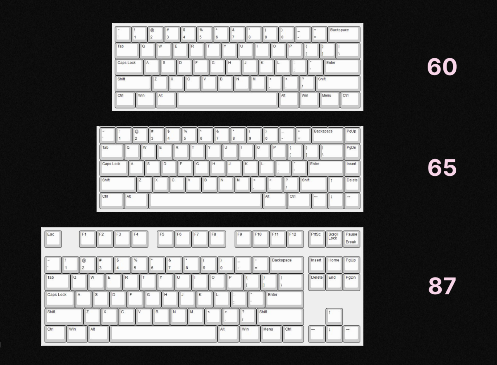
I'd say most people prefer the 65 because it's most similar to your laptop's built-in keyboard layout.
The main difference between the 60 and the 65 is the arrow keys.
As you can see, the 60 layout doesn't have arrow keys on layer 0 (i.e. what is written on the keycaps). Instead, you have to access them on layer 1 using the MO(1) key or Fn key.
If you want to
visually see your arrow keys, go with the 65.
Personally, I prefer the 60 layout. If you're a Vim user like me, the 60 layout is actually really nice because you're not using your arrow keys anyways so I feel like it's overall most efficient and compact.
Casing
Once you've chosen a size, it's time to choose what casing you want. This includes the main case plus things like the gaskets, plate, and PCB.
I use the term "casing" here because you can either choose a build that already has the bulk of this stack or you can choose to get all these
parts separately — it's up to you. But since this is (most likely) your first keyboard, I'd say choose the former.
I recommend getting a Bakaneko (
Bakaneko60,
Bakaneko65). It's high quality and easy to assemble, making it a fantastic first board build.
These are also nice because while it comes with the bulk of the board stack, you can still change out specific parts if you really want (e.g. using different stabilizers).
The Bakaneko Series come with hotswap PCB, which means you can insert and remove switches without soldering it onto the circuit board inside. Soldered PCB means you have to manually
solder each switch in place, which has benefits like moer reliable electrical connections but is more difficult to assemble and prone to error.
I'd stick to hotswap for a fun first build.
For an 87, something like the
NK87 is a good choice (I don't really recommend the 87 for most people though, it's quite bulky).
If you want to remap keys or are getting a 60 layout, make sure to choose a board that is VIA compatible (easy key remapping software).
Switches
My favorite part of the build... switches! Switches are responsible for the fundamental sound and feel of your board.
There are three types of switches: linear, tactile, and clicky.
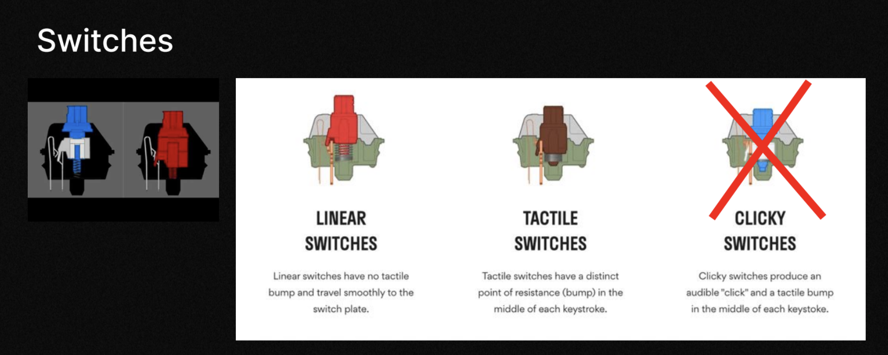
The reason why the clicky switch has a big X over it is because it's really noisy. It's fine if you want this to be your home keyboard but
it's certainly too loud for an in-office keyboard.
So personally, I think you should choose between linear and tactile. The main difference is their "smoothness" — linear has no resistance on the
downward stroke vs. tactile has a resistance bump (which offers a more distinct sensory experience).
One is not "better" than the other; it's simple personal preference. The best way to know which switch is right for you is by trying them both
and seeing which you like.
If you can't compare switches by feel, here's a helpful
video comparing switch sounds.
My Recommendations:
Keycaps
The keycaps you choose are mainly for aesthetic but there are also different profiles. Each is a different typing feel and experience.
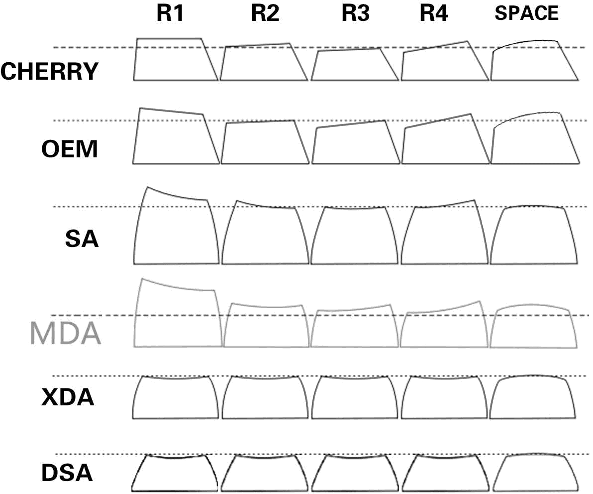
I'd say sculpting is better than no sculpting (i.e. flat keys like a laptop built-in keyboard). The difference in heights and form feel and look nicer in my opinion.
Cherry and OEM are both cylindrical shape while SA is spherical and high profile. I think SA is a bit too tall for most people but it really depends on your preference (e.g. if you have larger hands for example).
DSA is uniform in height and low profile — which people say is great for gaming.
Again, it's a personal choice.
You can buy keycaps anywhere (NovelKeys, aliexpress, etc).
II. Mods
You can go crazy with mods but I think the highest value-adding optimization is lubing your switches.
To lube your switches, you essentially need to open up each switch, add lube to certain parts, and then reassemble the switch. Do this before starting to assemble your keyboard.
Steps:
1. Open all your switches.
2. Take your brush and add a litle bit of lube to it (thin coat, not globs).
3. Brush one end of each spring.
4. Brush the bottom housing (the two rails and the leaf).
5. Put your spring on your bottom housing.
6. Add a bit more lube to your brush.
7. Lube your stem (swipe each side of the stem twice).
8. Put the stem on the spring and bottom housing, close with the top housing.
Watch this
video for a straightforward tutorial. Here is another comprehensive
guide with pictures (brushing your springs + full-lube method).
Another simple mod you can do is clipping and lubing your stabilizers (
video).
Here are some other good mods if you're up for it (but not necessary for your first build).
III. Assembly
Now that you have all the necessary components, it's time to assemble your board.
Different keyboards have different builds but for the sake of example, here is the Bakaneko assembly:
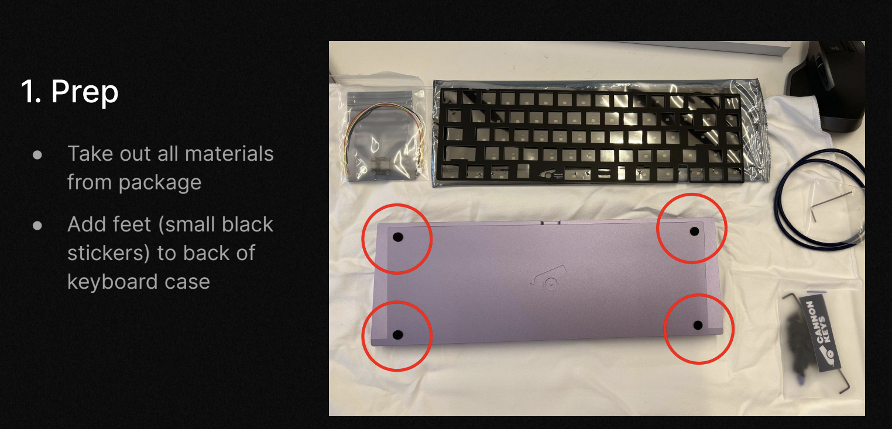
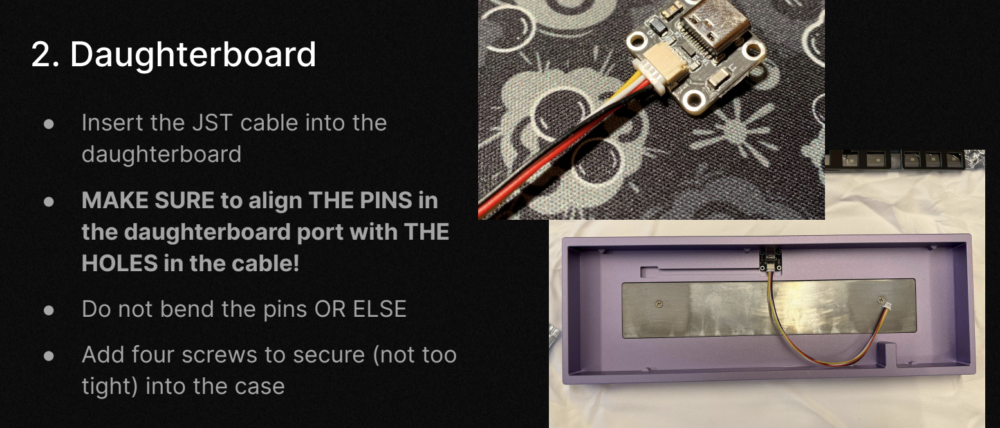
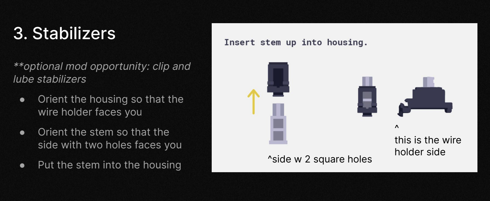
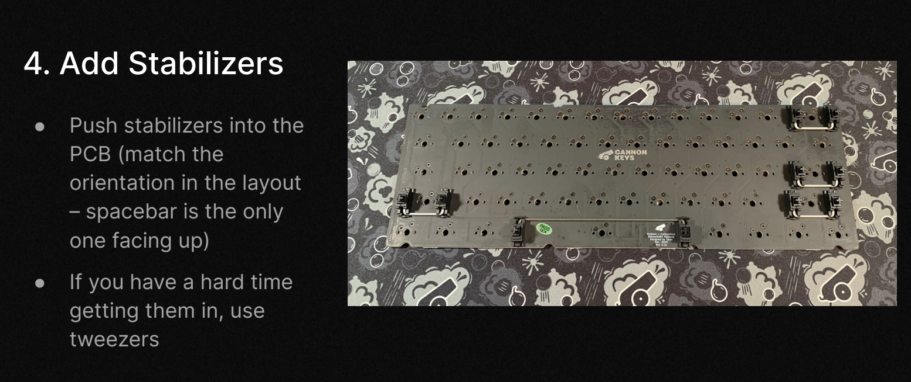
Now that you have your board, you can start adding your switches:
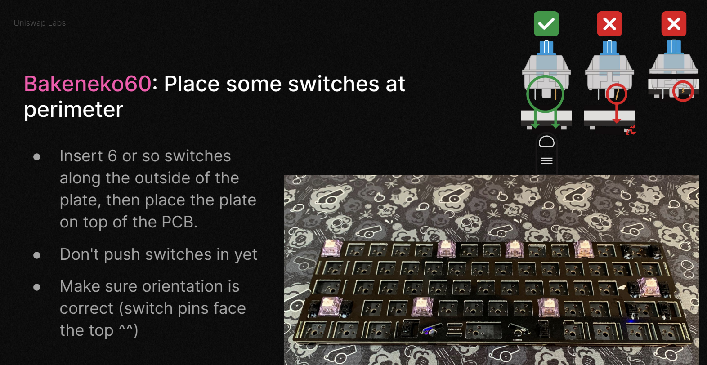
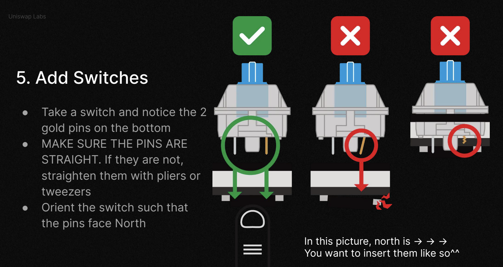
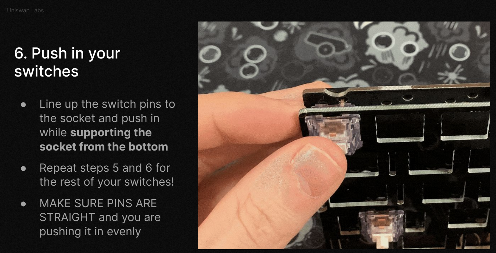
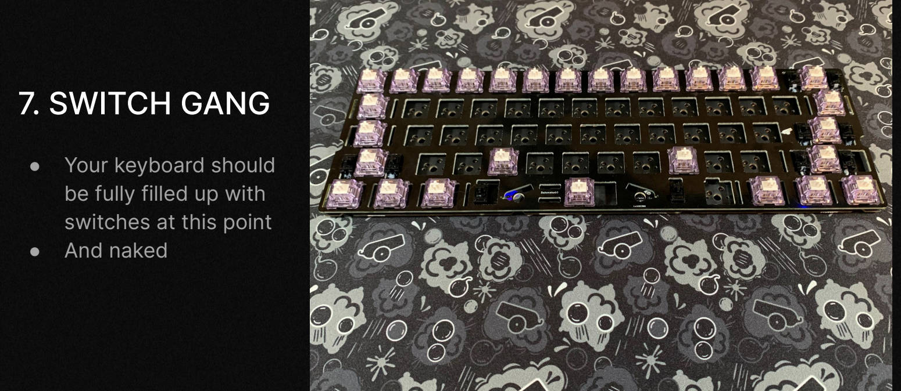
Next, navigate to
VIA. Go to the key tester
and test all of your switches to make sure they register inputs. You can also use VIA to remap your keys.
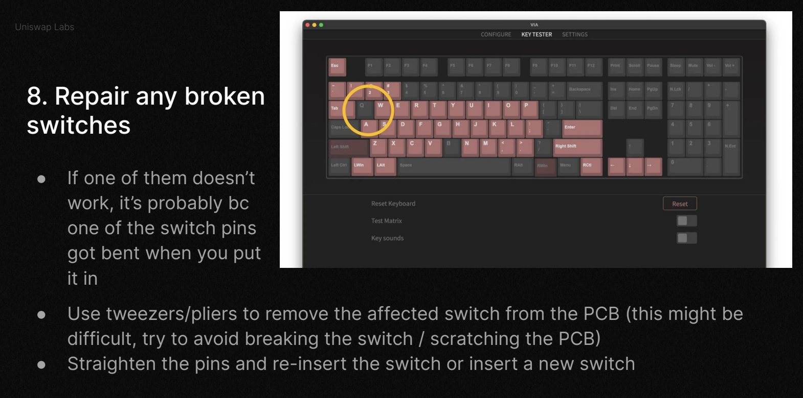
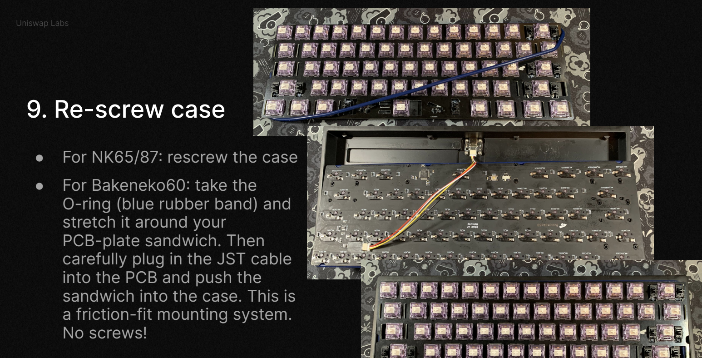
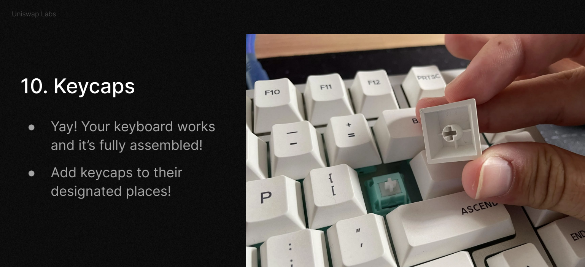
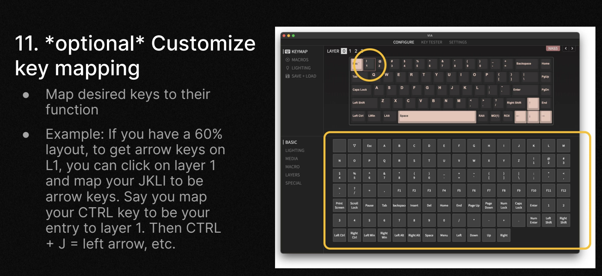
IV. Appendix
If you don't want to build your own keyboard, check out
r/mechmarket for people selling their old keyboards. Out-of-the-box keyboards
that I like are HHKBs. I really like the compact 60 layout and feel of the topre (see comparison of HHKBs
here and
here).
Enjoy your keyboard!